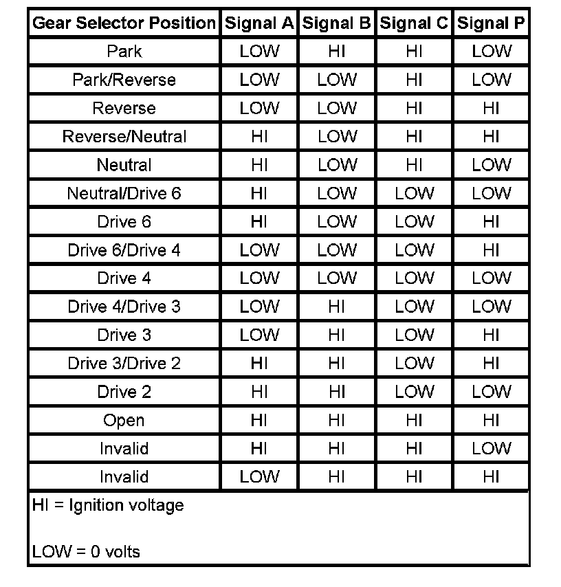

Operation CHARM
: Car repair manuals for everyone.
Home
>>
Cadillac
>>
2007
>>
Escalade ESV AWD V8-6.2L
>>
Repair and Diagnosis
>>
Specifications
>>
Electrical Specifications
>>
Automatic Transmission/Transaxle
>>
System Specifications
>>
6L50/6L80/6L90 - Automatic Transmission
6L50/6L80/6L90 - Automatic Transmission
Transmission Internal Mode Switch Logic
Transmission Internal Mode Switch Logic:
